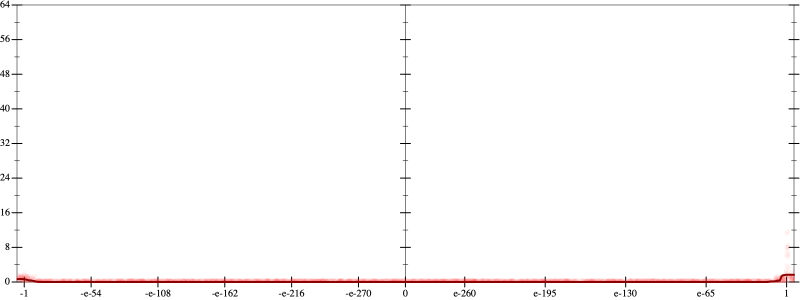
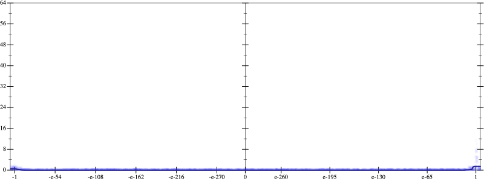
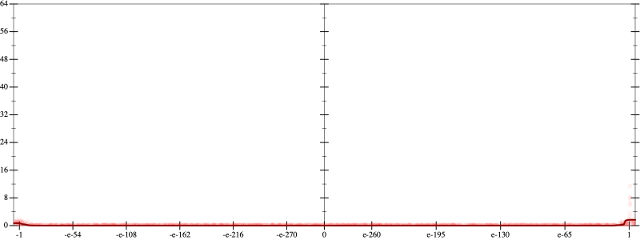
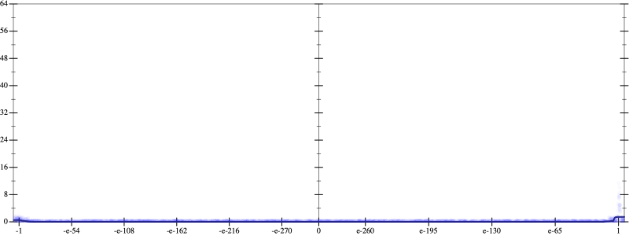

Initial program 0.0
\[\left(\left(\left(\left(\left(\left(\left(\left(\left(1.0 + -12.0 \cdot x\right) + 33.0 \cdot \left(x \cdot x\right)\right) + -36.666667 \cdot \left(\left(x \cdot x\right) \cdot x\right)\right) + 20.625 \cdot \left(\left(\left(x \cdot x\right) \cdot x\right) \cdot x\right)\right) + -6.6 \cdot \left(\left(\left(\left(x \cdot x\right) \cdot x\right) \cdot x\right) \cdot x\right)\right) + 1.283333 \cdot \left(\left(\left(\left(\left(x \cdot x\right) \cdot x\right) \cdot x\right) \cdot x\right) \cdot x\right)\right) + -0.157143 \cdot \left(\left(\left(\left(\left(\left(x \cdot x\right) \cdot x\right) \cdot x\right) \cdot x\right) \cdot x\right) \cdot x\right)\right) + 0.012277 \cdot \left(\left(\left(\left(\left(\left(\left(x \cdot x\right) \cdot x\right) \cdot x\right) \cdot x\right) \cdot x\right) \cdot x\right) \cdot x\right)\right) + -0.000606 \cdot \left(\left(\left(\left(\left(\left(\left(\left(x \cdot x\right) \cdot x\right) \cdot x\right) \cdot x\right) \cdot x\right) \cdot x\right) \cdot x\right) \cdot x\right)\right) + 1.8 \cdot 10^{-05} \cdot \left(\left(\left(\left(\left(\left(\left(\left(\left(x \cdot x\right) \cdot x\right) \cdot x\right) \cdot x\right) \cdot x\right) \cdot x\right) \cdot x\right) \cdot x\right) \cdot x\right)\]
Taylor expanded around 0 0.0
\[\leadsto \left(\left(\left(\left(\left(\left(\left(\left(\left(1.0 + -12.0 \cdot x\right) + 33.0 \cdot \left(x \cdot x\right)\right) + -36.666667 \cdot \left(\left(x \cdot x\right) \cdot x\right)\right) + 20.625 \cdot \left(\left(\left(x \cdot x\right) \cdot x\right) \cdot x\right)\right) + -6.6 \cdot \left(\left(\left(\left(x \cdot x\right) \cdot x\right) \cdot x\right) \cdot x\right)\right) + 1.283333 \cdot \left(\left(\left(\left(\left(x \cdot x\right) \cdot x\right) \cdot x\right) \cdot x\right) \cdot x\right)\right) + -0.157143 \cdot \left(\left(\left(\left(\left(\left(x \cdot x\right) \cdot x\right) \cdot x\right) \cdot x\right) \cdot x\right) \cdot x\right)\right) + 0.012277 \cdot \left(\left(\left(\left(\left(\left(\left(x \cdot x\right) \cdot x\right) \cdot x\right) \cdot x\right) \cdot x\right) \cdot x\right) \cdot x\right)\right) + -0.000606 \cdot \left(\left(\left(\left(\left(\left(\left(\left(x \cdot x\right) \cdot x\right) \cdot x\right) \cdot x\right) \cdot x\right) \cdot x\right) \cdot x\right) \cdot x\right)\right) + 1.8 \cdot 10^{-05} \cdot \left(\left(\left(\left(\left(\left(\left(\color{blue}{{x}^{3}} \cdot x\right) \cdot x\right) \cdot x\right) \cdot x\right) \cdot x\right) \cdot x\right) \cdot x\right)\]
Applied simplify0.0
\[\leadsto \color{blue}{\left(\left(1.8 \cdot 10^{-05} \cdot \left(x \cdot x\right)\right) \cdot \left(\left(\left(x \cdot x\right) \cdot \left(x \cdot x\right)\right) \cdot \left(\left(x \cdot x\right) \cdot \left(x \cdot x\right)\right)\right) + \left(\left(\left(x \cdot x\right) \cdot \left(x \cdot x\right)\right) \cdot \left(\left(x \cdot x\right) \cdot \left(x \cdot x\right)\right)\right) \cdot \left(-0.000606 \cdot x + 0.012277\right)\right) + \left(\left({\left(x \cdot x\right)}^{3} \cdot \left(-0.157143 \cdot x + 1.283333\right) + \left(\left(x \cdot x\right) \cdot \left(x \cdot x\right)\right) \cdot \left(20.625 + -6.6 \cdot x\right)\right) + \left(\left(x \cdot x\right) \cdot \left(-36.666667 \cdot x + 33.0\right) + \left(x \cdot -12.0 + 1.0\right)\right)\right)}\]
Taylor expanded around 0 0.0
\[\leadsto \left(\color{blue}{\left(1.8 \cdot 10^{-05} \cdot {x}^{2}\right)} \cdot \left(\left(\left(x \cdot x\right) \cdot \left(x \cdot x\right)\right) \cdot \left(\left(x \cdot x\right) \cdot \left(x \cdot x\right)\right)\right) + \left(\left(\left(x \cdot x\right) \cdot \left(x \cdot x\right)\right) \cdot \left(\left(x \cdot x\right) \cdot \left(x \cdot x\right)\right)\right) \cdot \left(-0.000606 \cdot x + 0.012277\right)\right) + \left(\left({\left(x \cdot x\right)}^{3} \cdot \left(-0.157143 \cdot x + 1.283333\right) + \left(\left(x \cdot x\right) \cdot \left(x \cdot x\right)\right) \cdot \left(20.625 + -6.6 \cdot x\right)\right) + \left(\left(x \cdot x\right) \cdot \left(-36.666667 \cdot x + 33.0\right) + \left(x \cdot -12.0 + 1.0\right)\right)\right)\]
Applied simplify0.0
\[\leadsto \color{blue}{\left({\left(x \cdot x\right)}^{\left(3 + 1\right)} \cdot \left(\left(0.012277 + -0.000606 \cdot x\right) + \left(1.8 \cdot 10^{-05} \cdot x\right) \cdot x\right) + \left(33.0 + x \cdot -36.666667\right) \cdot \left(x \cdot x\right)\right) + \left(\left(\left(-12.0 \cdot x + 1.0\right) + \left(\left(-0.157143 \cdot x\right) \cdot \left(x \cdot x\right)\right) \cdot \left(\left(x \cdot x\right) \cdot \left(x \cdot x\right)\right)\right) + \left(\left(\left(x \cdot x\right) \cdot \left(x \cdot x\right)\right) \cdot \left(\left(x \cdot x\right) \cdot 1.283333\right) + \left(\left(x \cdot x\right) \cdot \left(x \cdot x\right)\right) \cdot \left(20.625 + x \cdot -6.6\right)\right)\right)}\]
Taylor expanded around 0 0.0
\[\leadsto \left(\color{blue}{{x}^{8}} \cdot \left(\left(0.012277 + -0.000606 \cdot x\right) + \left(1.8 \cdot 10^{-05} \cdot x\right) \cdot x\right) + \left(33.0 + x \cdot -36.666667\right) \cdot \left(x \cdot x\right)\right) + \left(\left(\left(-12.0 \cdot x + 1.0\right) + \left(\left(-0.157143 \cdot x\right) \cdot \left(x \cdot x\right)\right) \cdot \left(\left(x \cdot x\right) \cdot \left(x \cdot x\right)\right)\right) + \left(\left(\left(x \cdot x\right) \cdot \left(x \cdot x\right)\right) \cdot \left(\left(x \cdot x\right) \cdot 1.283333\right) + \left(\left(x \cdot x\right) \cdot \left(x \cdot x\right)\right) \cdot \left(20.625 + x \cdot -6.6\right)\right)\right)\]
Applied simplify0.0
\[\leadsto \color{blue}{\left(\left(\left(x \cdot -12.0 + 1.0\right) + \left(\left(x \cdot x\right) \cdot \left(x \cdot x\right)\right) \cdot \left(\left(x \cdot -0.157143\right) \cdot \left(x \cdot x\right)\right)\right) + \left(\left(x \cdot x\right) \cdot \left(x \cdot x\right)\right) \cdot \left(\left(x \cdot -6.6 + 20.625\right) + \left(x \cdot x\right) \cdot 1.283333\right)\right) + \left({x}^{8} \cdot \left(x \cdot -0.000606 + 0.012277\right) + \left(x \cdot x\right) \cdot \left(1.8 \cdot 10^{-05} \cdot {x}^{8} + \left(33.0 + -36.666667 \cdot x\right)\right)\right)}\]
 
